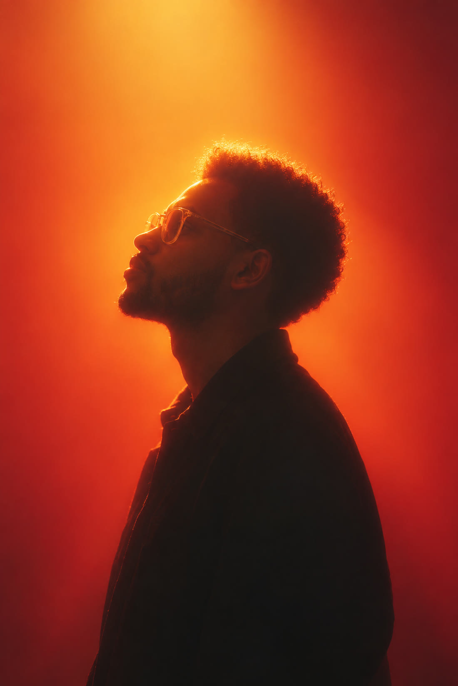

The real constraint
Every project starts with the actual constraint: who has to be convinced, what information has to be tamed, what the brand has to earn.

Yohannes Assefa — digital designer & Framer developer
I design and build thoughtful websites and visual identities that help businesses communicate clearly, earn trust, and turn their ideas into compelling digital experiences.
Projects that speak visually
How I work
The same three moves run through every project here, so the work can be judged on intent rather than taste.
Every project starts with the actual constraint: who has to be convinced, what information has to be tamed, what the brand has to earn.
Each decision is written down with its reason — photography-first here, region-first navigation there — so the work explains itself.
What shipped, on what timeline, and what it does for the client today. Verified, not exaggerated.
Capabilities
Interface, identity and development — websites and phone apps, designed and built end to end.
Wireframing and prototyping Interface design for web and mobile Usability testing and feedback analysis Micro-interactions and motion
Logo and brand identity design Social graphics and campaign art Infographics and visual systems Custom illustration and icons
Responsive website design Phone app design — iOS & Android AI-assisted web development Landing pages and optimisation
Brand strategy and identity Visual style guides Typography and colour systems Brand storytelling

About
I’m a digital designer trained in architecture — that background is why every project starts with what a visitor actually needs to understand, then the interface that gets it across, and only then the atmosphere.
Six case studies across travel, photography, interiors, real estate, culture and reading — five for clients and one self-initiated — plus two archive pieces in branding and editorial.
Selected work
Hover a project to preview its cover; open it for the full story — the client’s ask, the calls I made, and what shipped.
 Travel platform · Framer
Travel platform · Framer Photography portfolio · Framer
Photography portfolio · Framer Interior design studio · Framer
Interior design studio · Framer Real estate platform · Framer
Real estate platform · Framer Arts institution · Framer
Arts institution · Framer Reading app · web, desktop & mobile
Reading app · web, desktop & mobileClient notes
“His design transformed my travel agency business. He converted my ideas into a high-performing, visually striking website.”
Sarah YaredOwner, ETtravel
“He took the time to understand our goals and delivered a design that resonated perfectly with our audience.”
Liya WolduProduct Manager, JoyInterior
Before you write
UI/UX design, web design and AI-assisted development for websites and phone apps, plus branding and graphic design.
We start with discovery, agree a direction, design and refine the work together, then prepare it for delivery.
The timeline follows the scope. Every project receives an agreed schedule before work starts.
Send an enquiry with what you are creating and the problem you want to solve.
Start a project
Send the shape of the idea: the audience, the constraint, the deadline you are working to. You get a reply within one working day, and a written scope before any work starts.